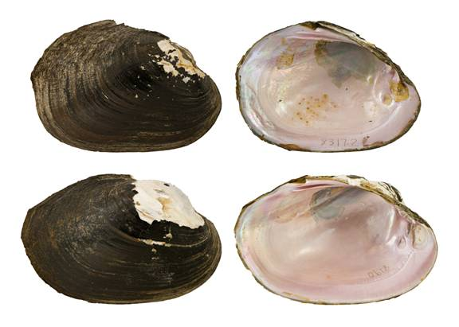

Potamilus purpuratus (Lamarck, 1819)
Bleufer

Potamilus purpuratus – top image, female, Village Creek [Neches River drainage], length 98.5 mm; bottom image, male, White Oak Creek [Red River drainage], length 100.0 mm.
Identification
Shell structure: moderately thin to thick, somewhat compressed to inflated.
Shell outline: elliptical to ovate, occasionally subtriangular, may have a low dorsal wing posterior to the umbo.
Posterior ridge: broadly rounded, occasionally distinct.
Shell color: greenish-brown in small individuals becoming black in larger individuals; surface dull to subglossy.
Rays: may present faint brown or green rays.
Shell texture: without sculpture.
Umbo: high, broad, elevated above hinge line; umbo cavity moderately deep.
Umbo sculpture: absent or faint ridges.
Pseudocardinal teeth: triangular, erect, solid, compressed, and roughened, 2 in the left, somewhat divergent, 1 tooth in the right valve.
Lateral teeth: relatively short, moderately thick, straight to slightly curved, 2 in left valve, 1 in right valve.
Interdentum: long and narrow or nearly absent.
Nacre: purple or pink, may show brassy blotches; iridescent posteriorly.
Other: sexually dimorphic, females broadly rounded to truncate posteriorly, but more pointed or narrowly rounded in males.
General Range
Mississippi River basin from Louisiana north to Missouri and southern Illinois and west to eastern Oklahoma and Kansas. Restricted to the lower Ohio and Tennessee drainages near the mainstem of the Mississippi River. Gulf Coast drainages from at least the Colorado River basin of central Texas to the Mobile River basin.
Habitat
Streams to rivers, oxbows, lakes, reservoirs, and canals. In riverine habitats can be found in nearshore habitats along banks or backwater pools and main-channel habitats in riffles and runs. Occurs in still to moderate currents in almost any substrate and may be found under rocks, in crevices within bedrock slabs and amongst woody debris.
Legal listing status